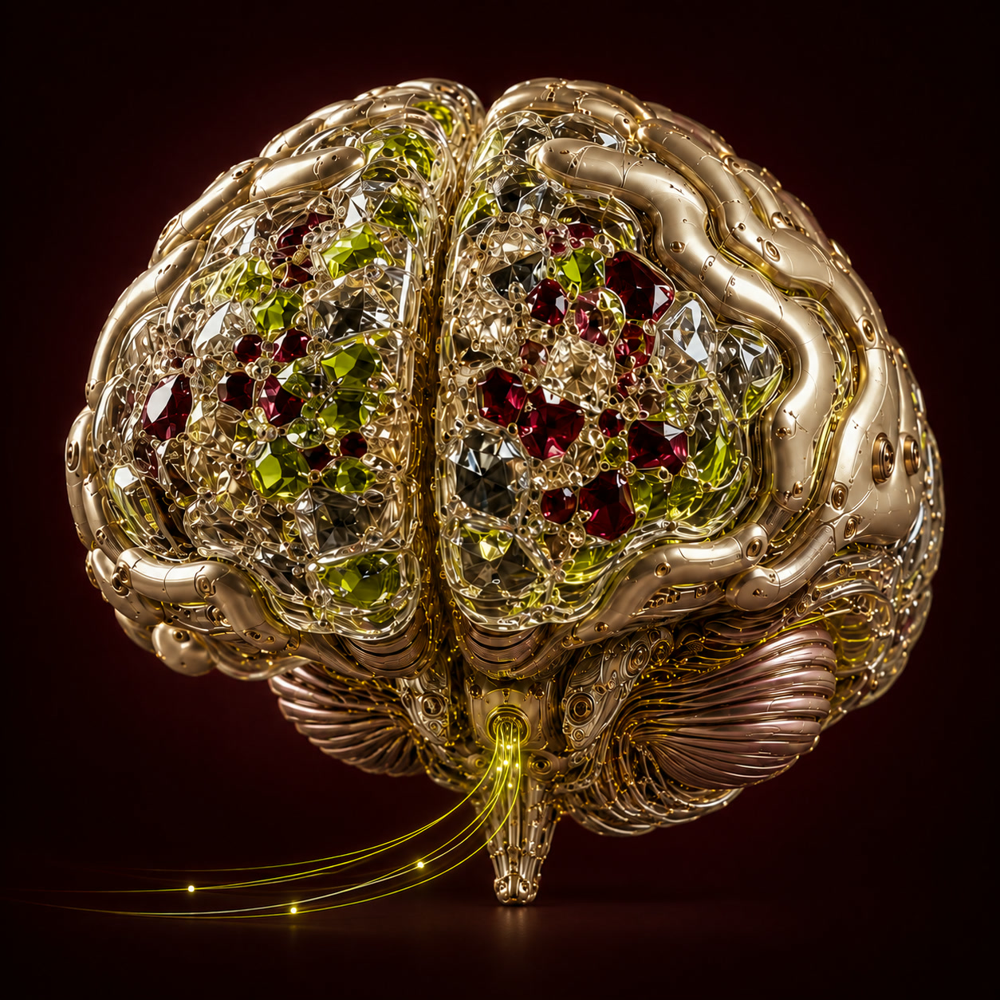

build your
agentic
company.
ntnd is designed for people and AI agents to work together. You set the direction; agents take on defined work with the context and boundaries you choose.
macOS first · Linux and Windows follow
You bring the intent.
Your agents bring it to life.
You decide what happens next.
make room for
the work that matters.
Research a question. Shape a draft. Run a recurring task. Give each agent a role, the right sources, and clear limits.
good work
has company.
Follow a task through the people, knowledge and decisions behind it.
Choose a panel to follow the work.
the whole company.
within reach.
See the work in progress, the agents behind it, and the decisions waiting for you. Open the result when it is ready.
Explore the workspace ↗︎your agents work.
you stay in charge.
Approve an action once, or deliberately allow a specific kind of work. See every standing permission and withdraw it when things change.
The action, before the approval.
See what is proposed and where it will happen.
A permission with a clear scope.
Allow matching work where standing permission is supported.
A record you can return to.
Inspect the decision and the authority an action used.
Ava wants to
run a workflow.
Review the named workflow before you give it permission.
- Action
- Run “weekly research”
- Where
- Your connected workspace
- Permission
- This action, once
your company,
connected.
Bring your documents, working methods and company knowledge together. Give agents relevant context without giving every agent access to everything.
A company brain.
Ideas in motion.
Scroll to see the whole picture.
A shared company brain.
Documents, facts and methods, filtered for the reader.
Explore Company Brain ↗︎ownershipYour machine. Your choice.
Keep your data locally. Choose local models or connect your own cloud-model key.
See what stays local ↗︎perspectiveSee the connections.
Explore how people, knowledge and decisions fit together in Company Brain.
Open Company Brain ↗︎bring a real task.
help shape what’s next.
We are inviting selected cohorts to work with the people building it. Tell us about the task you hope to explore.
Build with us ↗︎what do you
intend to build?
Bring the first task. We’ll help you begin.